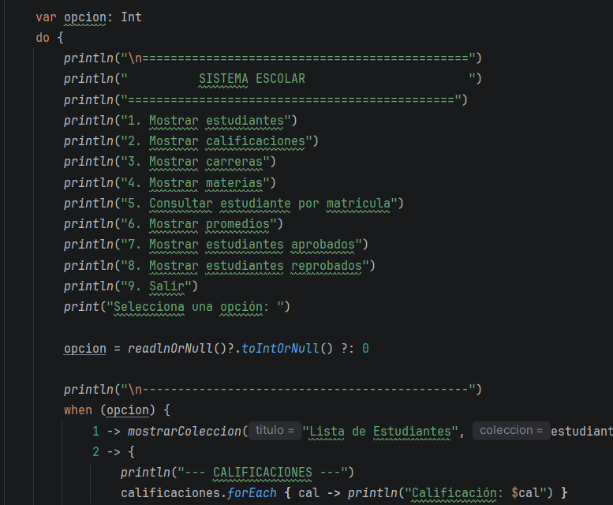

Hola!! Soy Jessica Odalis Jimenez Tejeda. Te doy la bienvenida a mi sitio web personal. Aquí encontrarás la recopilación de mis evidencias académicas, proyectos de desarrollo de software y trayectoria técnica en Tecnologías de la Información.

ACERCA DEMÍ
Actualmente estoy estudiando Tecnologias de la Informacion e innovacion digital, en la Universidad Tecnologica de Leon, me gusta mucho aprender cosas nuevas, por eso disfruto y aprovecho mis clases lo mas que puedo. Mi meta es consolidarme como desarrollador y crear herramientas digitales que aporten valor. Soy una persona que busca entender a fondo cada tema, no solo cumplir con la entrega. Reviso mis códigos, corrijo errores y busco mejorar en cada trabajo. La práctica constante me ayuda a avanzar con más seguridad y esto me servira mucho en el futuro.
Enfocada en el aprendizaje continuo, manejo de bases de datos, lenguajes como Java y desarrollo Frontend.
- Nombre: Jessica Odalis Jimenez Tejeda
- Correo: jess1caodalisjt@gmail.com
- Teléfono: +52 477 594 2886
- Ubicación: León, Guanajuato, México
INFORMACIÓN
ACADÉMICA
Desarrollo de proyectos integradores, maquetado web con HTML y CSS, e implementación de control de versiones con Git y GitHub. Mi formación abarca desde los fundamentos de la programación hasta el desarrollo de sistemas completos, manejo de información y creación de soluciones digitales.
- Programación en lenguajes como Kotlin, c++, java
- Diseño y consulta de bases de datos
- Análisis y estructuración de sistemas de información
EXPERIENCIA
LABORAL
Estudiante de Tecnologías de la Información e Innovación Digital con formación en programación, lógica de sistemas y manejo de herramientas digitales. Soy responsable, comprometida y con gran disposición para aprender, colaborar en equipo y aplicar mis conocimientos en proyectos reales. Busco una oportunidad para iniciar mi trayectoria profesional, aportar valor y seguir creciendo junto a una empresa.
- Soporte y mantenimiento de equipos de cómputo
- Buena atencion al cliente
- Se seguir ordenes al pie de la letra
- Asistencia en proyectos de desarrollo e integración de sistemas